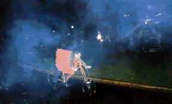

{kind=link}
{kind=link}
{kind=link}
{kind=link}
{kind=link}
{kind=link}
{kind=link}

|
The social structure of C.H.U.N.K. 666 is a cross between a grade-school playground and a troop of monkeys. The pecking order is always changing, and is usually determined by constant little skirmishes, both on the road and in the lab. This can take its toll on bicycles as well as humans, however, so we provide two escape valves - the Chunkathalon, where the mightiest are determined through competition, and the Rink, during which we just chill out, ride friendly-like in circles, and dance. |
| The most important of our contests is the Master Cylinder Lap. Contestants must catch up with Hoss in the Keg Trike, which is loaded with tallboys of the cheapest beer available at the moment. The rider who first completes a lap with an empty can without spilling a drop is declared the winner. | |
| During the Golden Age, this was the 40 lap, but people today are less mighty than the ancestors. After a few repetitions, contestants usually have difficulties staying on the track. Balances deteriorate, and body-checking becomes the most effective tactic. | |
| Sometimes, the pretense of going around the track is abandoned completely, and the event turns into the Master Cylinder Brawl. |
We hold many jousting tournaments in keeping with the traditions of our ancestors. There are many ways to go about bringing this ancient contest into the modern age. The best lances are made out of somewhat flexible PVC pipe - it should be easier to hit your opponent than to take a hit. The more flexible lances shown below make it a little harder, because their wielders must continue to aim them after contact has been made, leading to balance and entanglement issues.
|
Unlike the joust, our re- and pre-enactments of great battles of the past and future are scripted events, but they are equally hazardous for their participants. |
And of course there is always the jumping off of stuff, at which Silken Thomas is the best.

At the Rink, on the other hand, things are calmer. Everyone just rides in the same direction and tries out the bikes. So long as nobody looks directly at the disco ball, collisions are rare. We'll light a few bonfires, the Flaming Bikes of Deth will do some laps to make things warm, and people keep dancing even when it starts to drizzle.
(Return to C.H.U.N.K. Operations)
| Copyright 2003 Megulon Five <megulon5@dclxvi.org>. |
|
This work is licensed under a Creative Commons License. | Last modified 4 August 2001. |